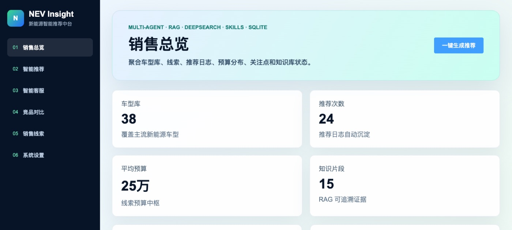
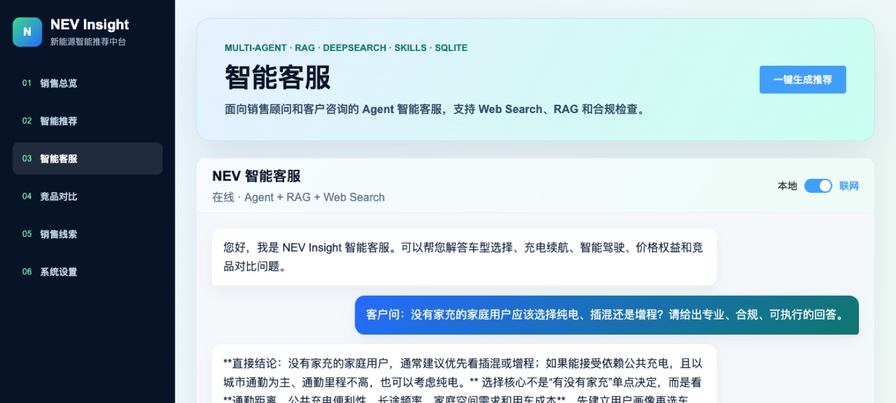

NEV Insight
新能源汽车智能推荐与销售决策平台
面向门店顾问和线上导购的选车工作台。客户报一次预算和关注点，系统给出 Top 5 车型推荐、竞品对比和可追溯的回答依据，并把这次沟通沉淀成能跟进的线索。
- 推荐和客服拆成两个 Agent：一个按客户画像排序车型，一个基于 RAG 与联网搜索回答「这个价位谁的智驾更强」，调用链在界面上直接可见
- 检索用混合检索（向量 + 关键词）兜住「续航 700km 以上」这类带硬条件的问法
- 线索库把画像、推荐结果、跟进动作串成一条，避免推荐完就断掉